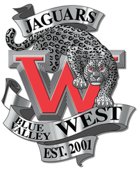
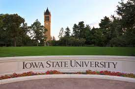
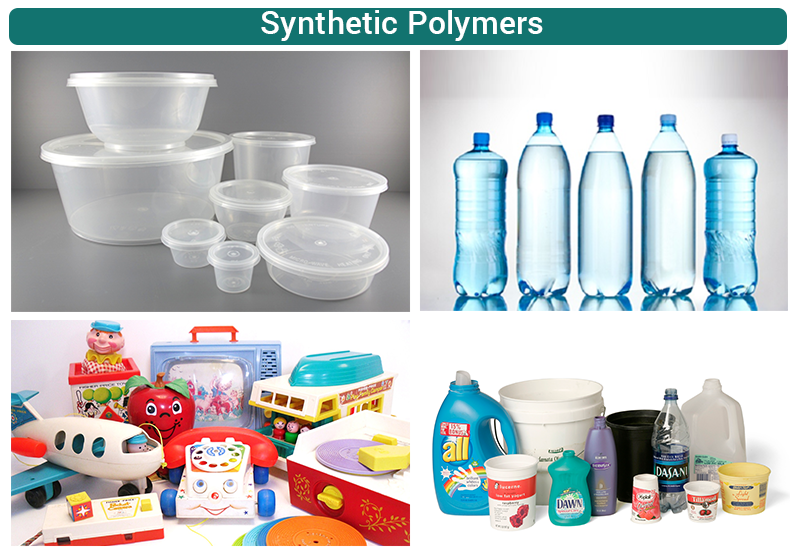

Blue Valley West High school is one of five blue valley schools in the Overland Park area and its a place where I was able to get a feel for a lot of hobbies that I stay involved in to this day. My plan as a a freshman wasto stay invested in something for all four years so I can easily seem what kind of improvement can be made. I staked my ground in Debate, Swimming & Diving, and last but not least Tennis. I didnt have any experience in the three before I joined but by the time the 4 years were up I was a state level competer in all three facets.
Blue Valley West
Iowa State University
When it came to picking the college I wanted to go to, I was not sure where to start. However knowing that I wanted to be on the engineering track and the fact that my brother had recently graduated Mechanical Engineering from Iowa State, I had a good idea of where I was gonna go. While I was there I majored in Chemical Engineering and was able to join a few organizations and communities. I was involved in a fraternity that was called Phi Kappa Psi (Phi Psi), I was able to climb the ranks from committee member to Co-Director of the ISU Blood Drive. I was also able to help put on the engineering career fair that would happen every year in two of the stadiums. I was able to see and learn a lot while apart of all communities and it has shaped the person I have become and influenced my outlook on life greatly.
Research of Polymers
The first summer after my freshman year, I knew I wanted to see it I could get my foot in the door for a research group. I emailed countless teachers and towards the end of the year I got a response from a professor in charge of the polymer group. I had little information about polymers but I knew the possibilities had to infinite in a research capacity because there were more than a few really smart professors in the lab along with their own graduate students. I was able to do research their for 2 years learning about polymers, co-polymers, block polymers and ways to analyze and measure those same ones. There were sponsorships by gravel companies, Texas Instruments, Honeywell, and a whole lot more. Polymers and plastics were involved in everything and there was always an inroad into whatever division you wanted to branch into. However it is that same research that had me question if engineering is what I truly wanted and when I started to rethink what I wanted to do.